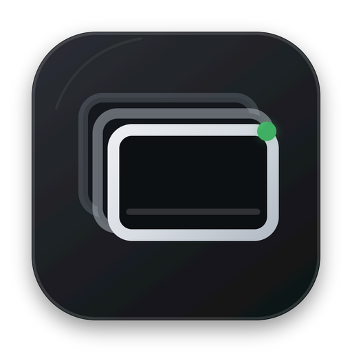
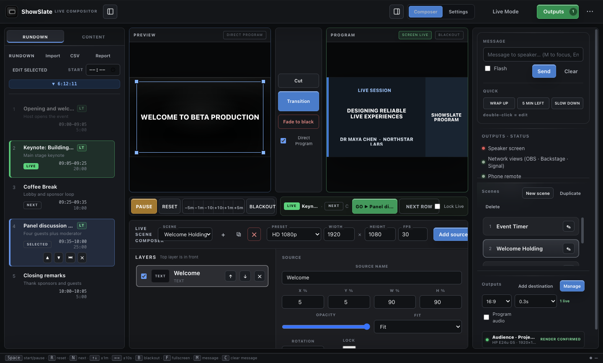
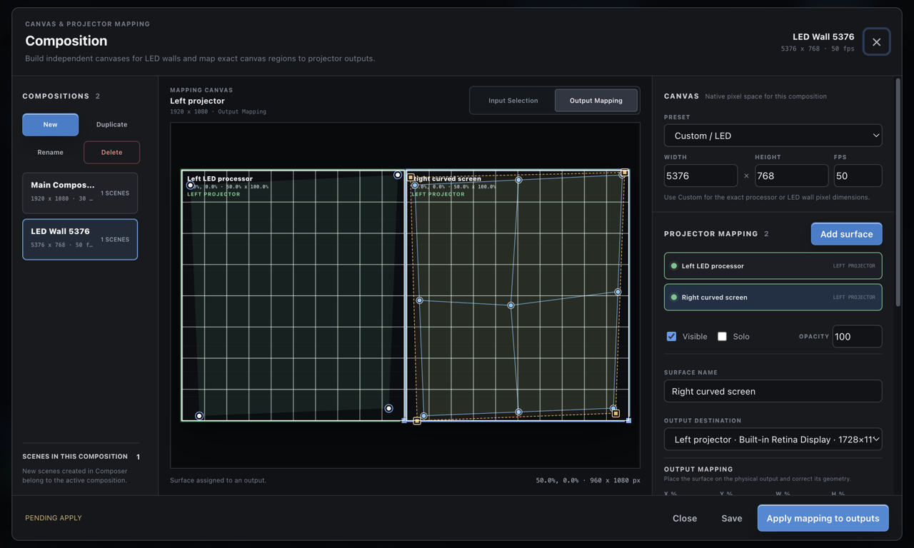
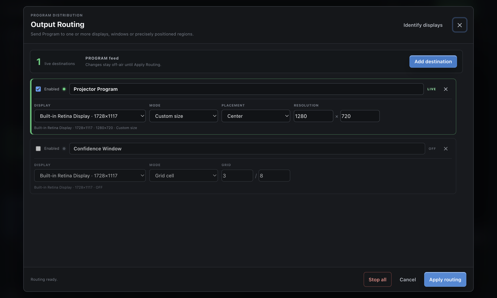
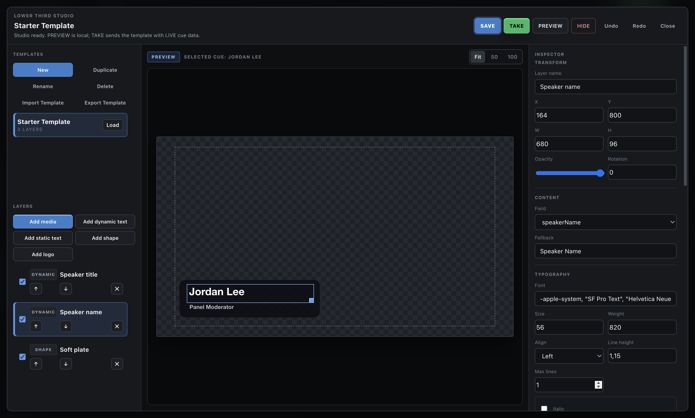

Small local live events
Conference cues, layered scenes, Preview/Program, timers, lower thirds, recording and several venue displays in one free offline app.

ShowSlate Live Compositor BetaMac-first public beta · free and open source
Run layered media, live inputs and conference cues across local venue screens from one Preview/Program workspace.
Public beta: the packaged Mac app is the primary tested build. Expect unfinished hardware workflows, rehearse the exact signal chain and keep a fallback for live events.
Windows x64 is experimental. Native CI packages pass, but physical Windows operator and hardware validation is still needed. Download Windows Setup for off-air testing.
Need only a simple countdown and OBS timer overlay? Use ProTimer instead.
Built for the live operator
Small productions often need media playback, live inputs, speaker graphics, timing, a clean recording and several displays, but not a full broadcast or VJ system. ShowSlate joins those tasks in one local workflow while leaving streaming, advanced audio and complex visual effects to specialist tools.
Where ShowSlate fits
Conference cues, layered scenes, Preview/Program, timers, lower thirds, recording and several venue displays in one free offline app.
OBS remains the stronger choice for streaming, filters, plugins and mature broadcast recording workflows.
Resolume Arena and ProPresenter remain more mature for advanced live visuals, mapping, worship and presentation ecosystems.
Live compositor workflow
Choose a Canvas resolution, create a scene and stack media, color, text, timing or a local live input as ordered layers.
Place, size, crop and verify every source without changing Program. Conference shows can also prepare NEXT, timing and speaker graphics.
Send the scene to Program, capture the clean Program locally, route independent output canvases and map a projector when needed.
ShowSlate Composer
Choose HD, square, vertical, UHD or an exact custom resolution and frame rate for the destination.
Stack pictures, video, PDF pages, solid colors, text and the live ShowSlate timer.
Add a chosen application window or display, then resize and place it inside the scene.
Use a camera or standard UVC capture card with an optional audio input for local Program output.
Control stack order, visibility, position, size, opacity, rotation and media fit from one inspector.
Prepare privately in Preview and send the complete scene to Program only when the operator is ready.
Local capture boundary: window and device streams appear in ShowSlate desktop output windows. Browser and OBS URL outputs do not receive those local streams.
Multi-display Program routing
Linked media, holding screens, timers and full Program content for the projector, LED wall or room display.
Current cue, next cue, speaker details, timer and urgent operator messages for the presenter.
A clean large countdown with warning colors and urgent messages for a dedicated stage display.
A transparent lower-third and graphics window for off-air OBS or vMix capture testing.
Room name, current session, next session and clock for signage outside the room.
Give each route its own Canvas and scaling, then align four corner points over an adjustable calibration grid.
Capture the clean Program locally with selected resolution, frame rate, format, quality and enabled Program audio.
Beta scope: the mapper handles practical four-corner correction for simple irregular surfaces. Complex masks, arbitrary meshes, automatic camera calibration and projector color matching are not included yet.
Real product screens




Mac-first public beta
Most users need one file only: the Mac DMG. GitHub's automatic Source code ZIP and TAR.GZ files are for developers and will not install ShowSlate.
Built and checked in native Windows CI, but not yet manually validated on physical Windows hardware.
The portable EXE is intended for advanced users who cannot install software.
SHA256SUMS.txt when needed. See the release details before overriding an operating-system warning. The previous 0.11 beta remains available.
Why public beta
Build a small scene and try the included Conference Desk demo off-air, then report what was unclear, what failed and what would save time in a real production. Independent workflow feedback matters more than download counters.
Before you download
It gives small productions one local workspace for layered media and live inputs, Preview/Program switching and multiple display outputs. The Conference Desk workflow also keeps a rundown, speaker timing, linked media and lower thirds in one cue state.
Export the rundown sheet as CSV/TSV or paste its rows into the wizard. Direct XLSX parsing is intentionally not included in this beta.
Yes. The MIT License permits use, modification and redistribution. The core workflow needs no account or internet. Network views stay on the trusted production LAN.
The primary tested beta is the Apple Silicon Mac ARM64 DMG. The Windows Setup EXE is experimental and still needs physical hardware validation. GitHub Source code archives are not installers.
No. ShowSlate can compose local windows, media and capture devices for room displays, but it does not encode a stream, provide multibus audio mixing or replace an advanced production switcher.
Yes in the desktop app. Add a chosen window, display, camera or standard UVC capture card as a Canvas layer. Local live streams appear in ShowSlate desktop output windows, not in browser or OBS URL outputs.
Yes. Select Record Program in the top bar to capture the clean Program locally without the operator interface. Settings include save folder, resolution, frame rate, format, quality and enabled Program audio.
Yes for simple four-corner correction. Each output can use its own Canvas and scaling, and Map projector provides four movable corners plus an adjustable calibration grid. Advanced mesh warping, masking and automatic calibration are not included in this beta.
No. Internal transparent rendering is tested, but external alpha capture depends on the other application's pipeline. Verify the exact workflow off-air before a live event.
Choose ProTimer for a fast countdown, OBS overlay, phone remote and simple rundown. Choose ShowSlate when the room also needs linked content, speaker lower thirds, LIVE/NEXT/GO and role-based outputs.
Language support
English and Serbian have full interface coverage. The other 35 language choices cover core operator controls and fall back to English for advanced areas. The exact policy is documented in Languages.